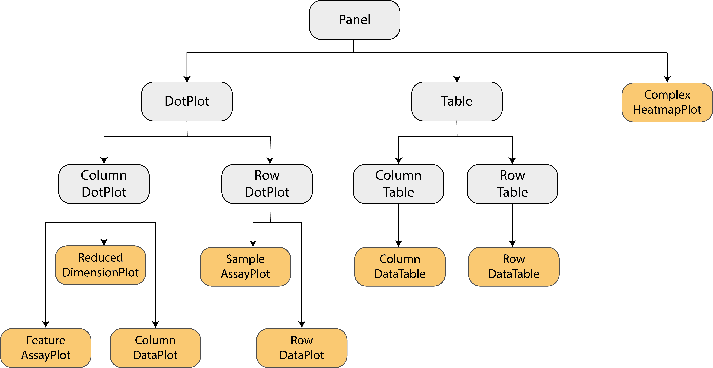
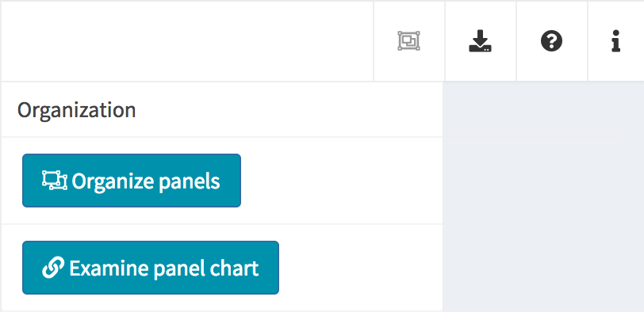
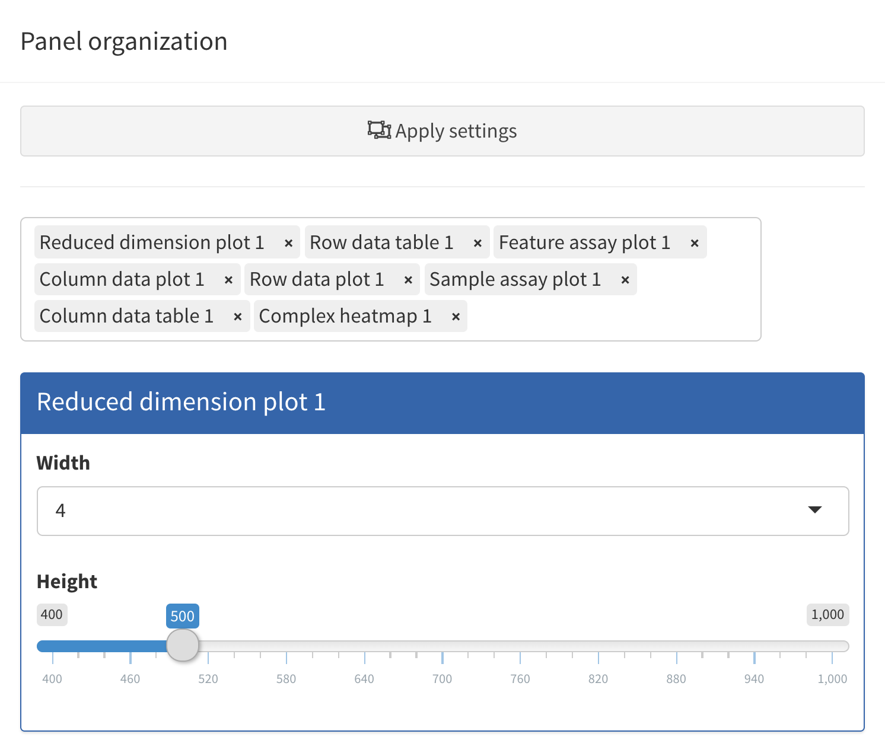
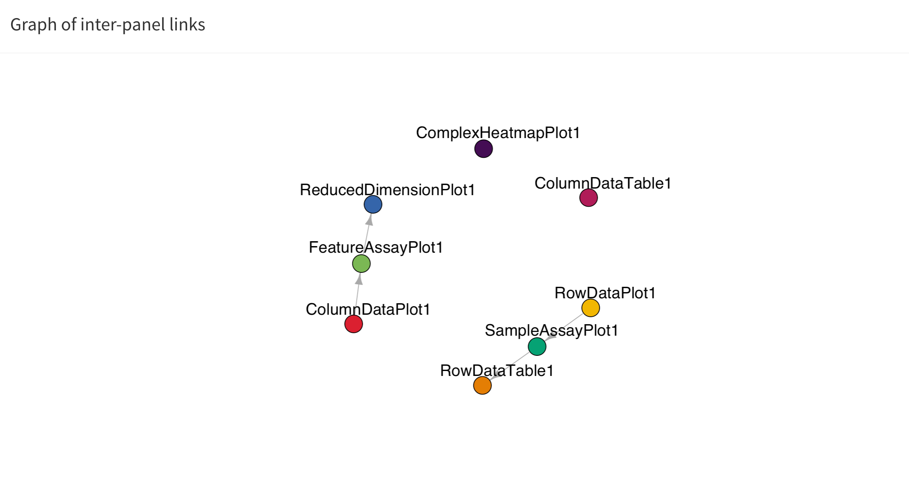
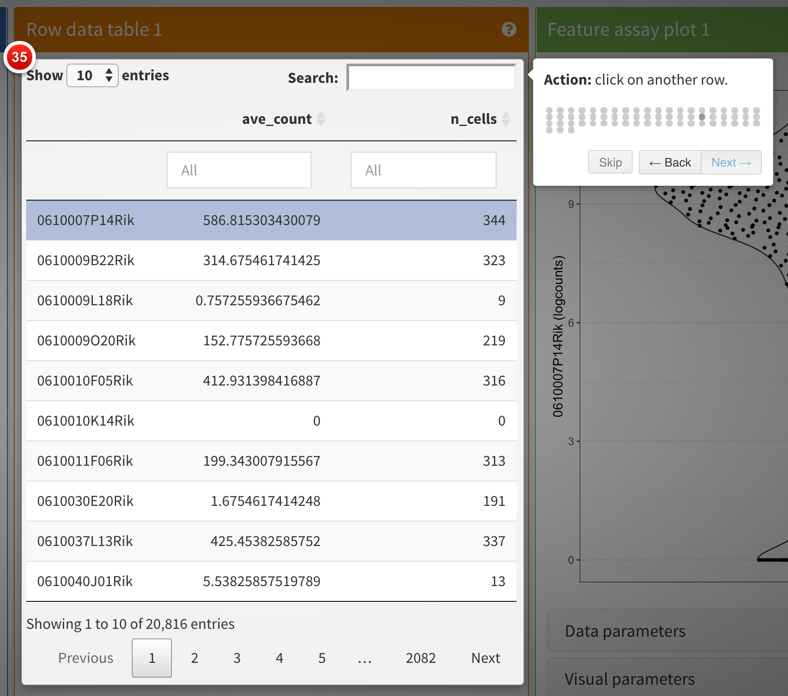
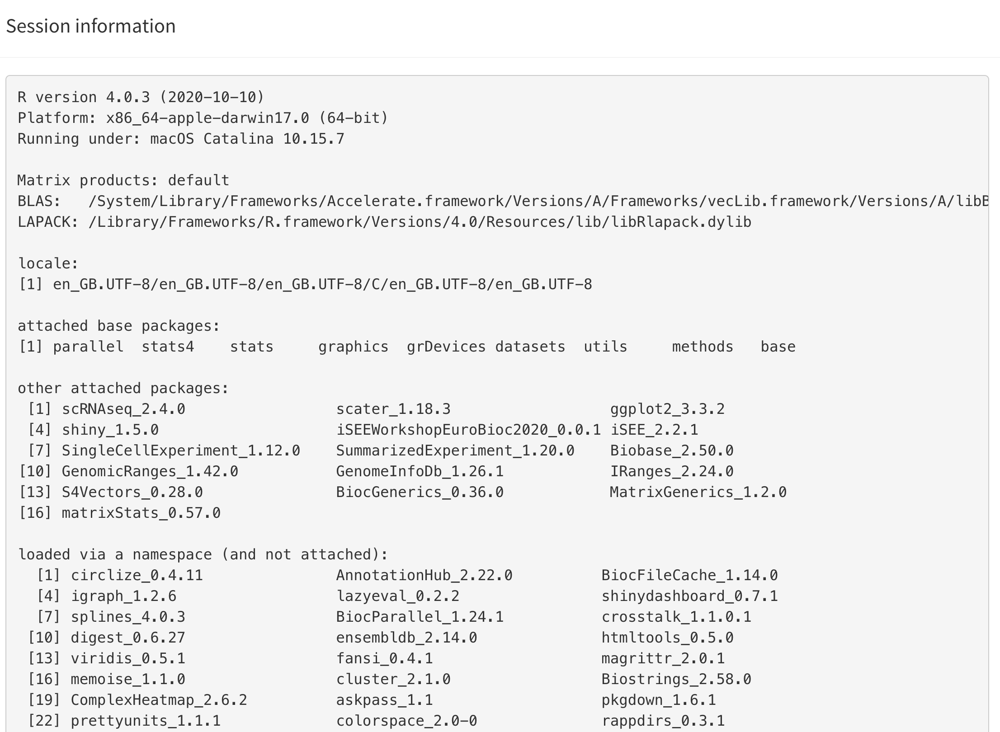

An overview of iSEE
Federico Marini1, Kevin Rue-Albrecht2, Charlotte soneson3, Aaron Lun4, Najla Abassi5
Source:vignettes/d02_iSEE_overview.Rmd
d02_iSEE_overview.Rmd
Introduction
This vignette provides an overview of the graphical interface of iSEE applications (Rue-Albrecht et al. 2018). To follow along, make sure that you launch the default iSEE instance as described in the next code block at the start of the following section.
Note that in the default configuration, the panels do not look exactly like the ones shown in the screenshots that you will see below. For example, data points are not immediately colored, and the default annotation variables displayed by each panel may differ. The hands-on recipes workshop of this workshop will demonstrate how to modify the content of the panels, and how they are displayed.
Note that for simplicity, we typically refer to a
SummarizedExperiment in this workshop; however, iSEE works
seamlessly for objects of any class extending
SummarizedExperiment as well (e.g.,
SingleCellExperiment, DESeqDataSet). That
said, some types of panels – such as the Reduced dimension plot – are
only available for objects that contain a reducedDim slot
(in particular, SingleCellExperiment objects); the basic
SummarizedExperiment class does not contain this slot. In
this workshop, we refer to the rows of the
SummarizedExperiment object as ‘features’ (these can be
genes, transcripts, genomic regions, etc) and to the columns as
‘samples’ (which, in our example data set, are single cells).
The default iSEE app
Using the demonstration data set, we can launch an iSEE
instance for exploring this data set using the iSEE()
function without any further argument. This will produce an app using
the default configuration; that is, the app instance will include one
panel of each built-in class for which the relevant information is
available in the SummarizedExperiment object.
library("iSEE")
sce_location <- system.file("datasets", "sce_pbmc3k.RDS", package = "iUSEiSEE")
sce_location
#> [1] "/tmp/RtmpwKgIu6/temp_libpath67033657d0a3/iUSEiSEE/datasets/sce_pbmc3k.RDS"
sce <- readRDS(sce_location)
app <- iSEE(sce)
shiny::runApp(app)The main argument to the iSEE() function is a
SummarizedExperiment object, or an object of any class
extending SummarizedExperiment (such as
SingleCellExperiment, in this case). No other restrictions
are made on the type of data stored in the object, and iSEE can be
used for interactive visualization of many different types of data. It
is also worth noting that for various types of data, Bioconductor
packages provides functionality for directly importing quantifications
generated by external software packages into a
SummarizedExperiment object. For example, the DropletUtils
package can read quantifications from the 10x Genomics CellRanger
pipeline for single-cell RNA-seq data, and the tximeta
package can be used to read data from transcript quantification
pipelines into a SummarizedExperiment object.
While we will not make explicit use of it in this workshop, we note
that it is also possible to call iSEE() without providing a
SummarizedExperiment object. In that case, the user will be
prompted to upload such an object, serialized into a .rds
file. It is also possible to import a specification of the initial panel
setup.
app <- iSEE()
shiny::runApp(app)The built-in panel types
The panel hierarchy
The iSEE user
interface (UI) consists of a number of panels, each displaying the data
provided in the SummarizedExperiment from a specific
perspective. There are 8 standard panel types; 6 plot panels and 2 table
panels, all showcased in the figure shown at the start of the previous section. In the default configuration,
one panel of each type is included when launching the iSEE user
interface. However, users are free to rearrange, resize, remove or add
panels freely, as demonstrated in the separate vignette of workshop recipes. We provide a
brief overview of each panel type in the following subsections.
In addition to the 8 standard panel types included in iSEE, users can create custom panels (both plots and tables). Moreover, the iSEEu (iSEE universe) package contains additional panel types. The creation and configuration of custom panels is also demonstrated in a series of workshop advanced recipes.
Specifically, iSEE panels are implemented as a hierarchy of S4 classes. Only concrete classes (orange) may be instantiated as panels in the user interface; while virtual classes (grey) provide functionality shared by families of panels (e.g., sample-oriented plots, feature-oriented tables).

Reduced dimension plot
The reduced dimension plot can display any reduced dimension
representation that is present in the reducedDim slot of
the SingleCellExperiment object.
Note that this slot is not defined for the base
SummarizedExperiment class, in which case the user
interface does not allow the inclusion of panels of this type.
Column data plot
The column data plot can display one or two of the provided column
annotations (from the colData slot). Depending on the class
of the selected annotations, the panel shows either a scatter plot, a
violin plot, or a Hinton diagram (Hinton and
Shallice 1991; Bremner, Gotts, and Denham 1994).
Row data plot
Analogous to the column data plot above,
the row data plot displays one or two of the provided row annotations
(from the rowData slot). Depending on the class of the
selected annotations, the panel displays either a scatter plot, a violin
plot, or a Hinton plot.
Complex heatmap
The complex heatmap panel displays, for any assay, the observed values for a subset of the features across the samples.
Feature assay plot
The feature assay plot displays the observed values for one feature across the samples. It is also possible to plot the observed values for two features, in a scatter plot.
Sample assay plot
Analogous to the Feature assay plot above, the Sample assay plot shows the observed values for all features, for one of the samples. It is also possible to plot the observed values for two samples, in a scatter plot.

Row data table
The row data table displays all information provided in the
rowData slot of the SummarizedExperiment
object, leveraging the interactivity provided by the DT package.
Column data table
Analogous to the Row data table above,
the column data table displays all information provided in the
colData slot of the SummarizedExperiment
object.
Collapsible boxes with display controls
Data parameters
Each plot panel type has a Data parameters collapsible
box. This box has different content for each panel type, but in all
cases it lets the user control the data that is displayed in the
plot.
Visual parameters
In contrast to the Data parameters collapsible box that
lets users control what is displayed in the plot, the
Visual parameters box lets users control how the
information is displayed.
This collapsible box contains the controls to change the size, shape, opacity, and color of the points, to facet the plot by any available categorical annotation, to subsample points for increased speed of plot rendering, and to control how legends are displayed.
Selection parameters
The Selection parameters collapsible box provides
controls to transfer selections of points (features or samples) between
panels.
We demonstrate examples of point transmission in the separate vignette of workshop recipes
Additional controls
At the top-right corner of the iSEE application, users can find additional controls for reproducibility, configuration, and help.
| Organization |  |
Organize panels Examine panel chart |
| Export |  |
Download panel output Extract R code Display panel settings |
| Documentation |  |
Quick tour Open the vignette |
| Additional info |  |
About this session About iSEE |
Organize panels
As mentioned above, the default behaviour of the iSEE()
function is to launch an instance of the user interface that displays
one panel of each of the standard types (provided the underlying data is
available, e.g. for reduced dimension plots the reducedDim
slot is required). However, in some cases it is desirable to have
multiple panels of the same type, and/or exclude some panel types.
In order to accommodate such situations, users can add, remove,
change the order of and resize all panels via the
Organization menu in the top-right corner.
Clicking in the selectize box listing all current panels will present you with a drop-down menu from which you can choose additional panels to add. Similarly, panels can be removed by clicking on the icon associated with the panel name.
Each panel can be individually resized by changing the width and height. Note that the total width of a row in the interface is 12 units. When the width of a panel is greater than the space available, the panel is moved to a new row.

Linking panels and transmitting point selections
When exploring data, it is often useful to be able to select a subset of points and investigate different aspects of their characteristic features. In iSEE, this can be achieved by selecting points in one panel, and transmitting this selection to one or more other panels.
The brushing and point selection can also be programmatically preconfigured.
The button Examine panel chart display a graph that
reports any active point transmission between panels in the app.

Download panel output
The Download panel output button opens a modal window
listing all the current panels in the app. Checkboxes allow users to
select any subset of panels to export. Finally, clicking the
Download button in that modal will prompt the app to save
plots to PDF files, tables to CSV files, package the set of files in a
ZIP archive that users can download and save on their computer.

Extract R code
The fact that data exploration is done interactively is no reason to forego reproducibility! To this end, iSEE lets you export the exact R code used to create each of the currently visible plots.
Importantly, the script reported by iSEE contains a short preamble needed to set up variable names that are used in individual panels, including active brushes used to transfer point selections.

Display panel settings
It can take a great amount of time to achieve a satisfactory panel configuration. To avoid the need to manually organize the panels each time the app is opened, iSEE offers the possibility to export code that can be reused later to programmatically specify how the app is initialized, as well as to inspect and export the current panel settings for future use.

Quick tour
One important aspect of visualization is the ability to share your
insights with others. A powerful way of easily getting people unfamiliar
with your data up to speed is to provide a walkthrough of the interface
and the different types of plots that are displayed. With iSEE, this
can be achieved using tours. To configure a tour, you need to
create a text file with two columns; named element and
intro, with the former describing the UI element to
highlight in each step, and the latter providing the descriptive text
that will be displayed.
Clicking the Quick tour button launches an interactive
tour of the interface using the rintrojs
package, highlighting specific elements of the user interface, labeled
with information and instructions guiding users through panels and tasks
specific to individual apps.

You can see a live example of a more complex tour in action in the deployed apps exemplified on the iSEE website, for example https://hbcc-nimh.shinyapps.io/shinyApp_JNS2023/.
Open the vignette
The user interface navigation bar also includes this button to open the introductory vignette to iSEE in your we browser.
Depending on the version of iSEE that you are using, this will adaptively lead you to a locally built vignette present on your computer, or the release or the devel version of the Bioconductor package landing page, e.g. <Bioconductor 3.21>.
Session information
This button displays the output of sessionInfo(), which
is a useful piece of information to report when reporting an issue with
an app.

About iSEE
This button provides information about the authors of iSEE, as well as citation information.
If you use this package, please use the following citation information:
Rue-Albrecht K, Marini F, Soneson C, Lun ATL (2018). “iSEE: Interactive SummarizedExperiment Explorer.” F1000Research, 7, 741. doi: 10.12688/f1000research.14966.1 (URL: https://doi.org/10.12688/f1000research.14966.1).
A BibTeX entry for LaTeX users is:
@Article{,
title = {iSEE: Interactive SummarizedExperiment Explorer},
author = {Kevin Rue-Albrecht and Federico Marini and Charlotte Soneson and Aaron T. L. Lun},
publisher = {F1000 Research, Ltd.},
journal = {F1000Research},
year = {2018},
month = {Jun},
volume = {7},
pages = {741},
doi = {10.12688/f1000research.14966.1},
}Using iSEE: what can you do with it?
In this section, we list a number of actions you can perform with the help of iSEE. Feel free to try them out already! The following vignettes will go into more details for many of them.
- Organize the iSEE panels:
- Search for the
Organize panelsbutton. - Try to add and remove panels, and resize and reorder the existing ones.
- Remember to click on
Apply settingsafterwards. - See how to export the
initialconfiguration of panels. - Relaunch the application, now with the additional argument
initialprovided.
- Search for the
- Multiple panels of the same type:
- Show two Reduced dimension plot panels; one showing the PCA representation, one showing the t-SNE representation.
- Link them together, so that points that are selected in one are highlighted in the other.
- More on
iSEElinks and transmissions:- Start an instance with the default set of panels and explore the different types of plots generated by the Feature assay plot panel using the choices available for the two axes.
- Select a set of points in one of the Feature assay plot panels, by drawing a rectangle around them.
- Then open the Selection parameters collapsible box of another Feature assay plot panel, and select the Feature assay plot panel where you made the point selection from the dropdown menu under Receive column selection from.
- Note how the points corresponding to the cells that you selected in the first panel are highlighted in the receiving panel.
- You can highlight the points in different ways by changing the Selection effect.
-
iSEEcan display active links transmitting point selections between panel using the “Examine panel chart” menu.
- Color the points:
- Open the
Visual parameterscollapsible box in one of the Reduced dimension plot panels, and setColor by:toColumn data. - Color the cells by
Cluster, which contains the cluster labels that were assigned to the cells in the preprocessing step. - Color the cells by the log10-transformed number of detected genes
(
log10_total). - Set
Color by:toFeature namein one of the Reduced dimension plot panels, and select one of the genes from the dropdown menu. You can search for a gene of interest by typing in the dropdown box.
- Open the
- Highlight & zoom:
- Set
Color by:toSample namein one of the Reduced dimension plots, and use the dropdown menu underneath to change the highlighted cell. - Reduce the point size and increase the transparency (i.e. reduce the value for the alpha attribute).
- Apply a downsampling grid of 100 horizontal and vertical bins.
- As above, select a region in the first panel and transmit the selection to the second one.
- Double-click on the area selected in the first panel to zoom and display the same view as the second panel.
- Double click again anywhere in the panel to zoom out.
- Set
- Launch iSEE with pre-specified configurations:
- Start
iSEEin the default configuration. - Click on the export icon () in the top-right corner, and select ‘Display panel settings’.
- Copy all the code shown in the pop-up window.
- Close the app and paste this code in your R session.
- This defines the ‘initial’ list that we have composed manually in the examples above. Then launch a new instance using the following code.
- Note how the app starts in the same configuration as it was before closing. Of course, it is still possible to continue exploring the data interactively - we have only changed the starting configuration.
- Start
iSEEwith one Column data plot and one Row data plot panel. - Start
iSEEin an empty configuration.
- Start
- Export code
- Click on the export icon () in the top-right corner, and select ‘Extract the R code’.
- Copy the preamble and the code for the first plot from the pop-up window. Close the app and paste the code in your R session.
- Note how this recreates the first plot from the app.
Modes and additional panels
The iSEEu (“iSEE universe”) Bioconductor package defines additional custom panels and predefined ‘modes’ (startup configurations) that may be useful for specific applications. Here we illustrate the use of the reduced dimension mode, which will start an application with one reduced dimension panel for each reduced dimension representation in the input object.
library("iSEEu")
#> Loading required package: iSEEhex
app <- modeReducedDim(sce)
shiny::runApp(app)Furthermore, since iSEE version
2.0.0, users can leverage the implementation of panels as a hierarchy of
S4 classes to rapidly extend the framework and develop new types of
panels with virtually unlimited freedom of functionality. In this
framework, new panel types can be readily integrated in apps alongside
built-in panel types and immediately benefit of most panel functionality
with minimal effort, including the capacity to transmit selections to
and from other panels. New panels may be implemented by extending the
core virtual class Panel directly for full control over the
user interface and reactive observers; alternatively, it is often
desirable for developers to inherit from one of the concrete panel
classes to get most of the essential functionality from the parent class
“for free”.
Use cases demonstrating the implementation of new panels with various levels of complexity are available in the Extending iSEE bookdown. For example, the Hexagonal reduced dimension plot - implemented in the iSEEhex package - demonstrates an alternative to the downsampling strategy, by summarizing data points into hexagonal bins.
app <- iSEE(sce, initial = list(
ReducedDimensionPlot(PanelWidth = 6L),
ReducedDimensionHexPlot(PanelWidth = 6L)
))
shiny::runApp(app)Another useful mode you can use with your data, for example if using
iSEE for mass cytometry data, would be the modeGating. This
launches an app preconfigured with multiple chain-linked feature
expression plots for interactive data exploration.
# Select top variable genes ----
plot_count <- 6
rv <- rowVars(assay(sce, "logcounts"))
top_var <- head(order(rv, decreasing=TRUE), plot_count*2)
top_var_genes <- rownames(sce)[top_var]
plot_features <- data.frame(
x=head(top_var_genes, plot_count),
y=tail(top_var_genes, plot_count),
stringsAsFactors=FALSE
)
# launch the app itself ----
app <- modeGating(sce,
plotAssay = "logcounts",
features = plot_features)
shiny::runApp(app)Interestingly, iSEEu also has a set of extra panels that can come in
handy in different situations. For example,
iSEEu::AggregatedDotPlot implements an aggregated dot plot
where each feature/group combination is represented by a dot. The color
of the dot scales with the mean assay value across all samples for a
given group, while the size of the dot scales with the proportion of
non-zero values across samples in that group. This can be an alternative
to a heatmap, and an example can be seen in the chunks below:
app <- iSEE(
sce,
initial = list(
AggregatedDotPlot(
Assay = "logcounts",
ColumnDataLabel = "labels_main",
CustomRowsText = top_var_genes
)
)
)An overview of other extension packages and the panels they provide can be found on the iSEE website: https://isee.github.io/panels.html.
Session info
Session info
sessionInfo()
#> R version 4.5.1 (2025-06-13)
#> Platform: x86_64-pc-linux-gnu
#> Running under: Ubuntu 24.04.2 LTS
#>
#> Matrix products: default
#> BLAS: /usr/lib/x86_64-linux-gnu/openblas-pthread/libblas.so.3
#> LAPACK: /usr/lib/x86_64-linux-gnu/openblas-pthread/libopenblasp-r0.3.26.so; LAPACK version 3.12.0
#>
#> locale:
#> [1] LC_CTYPE=en_US.UTF-8 LC_NUMERIC=C
#> [3] LC_TIME=en_US.UTF-8 LC_COLLATE=en_US.UTF-8
#> [5] LC_MONETARY=en_US.UTF-8 LC_MESSAGES=en_US.UTF-8
#> [7] LC_PAPER=en_US.UTF-8 LC_NAME=C
#> [9] LC_ADDRESS=C LC_TELEPHONE=C
#> [11] LC_MEASUREMENT=en_US.UTF-8 LC_IDENTIFICATION=C
#>
#> time zone: Etc/UTC
#> tzcode source: system (glibc)
#>
#> attached base packages:
#> [1] stats4 stats graphics grDevices utils datasets methods
#> [8] base
#>
#> other attached packages:
#> [1] iSEEu_1.20.0 iSEEhex_1.10.0
#> [3] iSEE_2.20.0 SingleCellExperiment_1.30.1
#> [5] SummarizedExperiment_1.38.1 Biobase_2.68.0
#> [7] GenomicRanges_1.60.0 GenomeInfoDb_1.44.0
#> [9] IRanges_2.42.0 S4Vectors_0.46.0
#> [11] BiocGenerics_0.54.0 generics_0.1.4
#> [13] MatrixGenerics_1.20.0 matrixStats_1.5.0
#> [15] BiocStyle_2.36.0
#>
#> loaded via a namespace (and not attached):
#> [1] rlang_1.1.6 magrittr_2.0.3 shinydashboard_0.7.3
#> [4] clue_0.3-66 GetoptLong_1.0.5 compiler_4.5.1
#> [7] mgcv_1.9-3 png_0.1-8 systemfonts_1.2.3
#> [10] vctrs_0.6.5 pkgconfig_2.0.3 shape_1.4.6.1
#> [13] crayon_1.5.3 fastmap_1.2.0 XVector_0.48.0
#> [16] fontawesome_0.5.3 promises_1.3.3 rmarkdown_2.29
#> [19] UCSC.utils_1.4.0 shinyAce_0.4.4 ragg_1.4.0
#> [22] xfun_0.52 cachem_1.1.0 jsonlite_2.0.0
#> [25] listviewer_4.0.0 later_1.4.2 DelayedArray_0.34.1
#> [28] parallel_4.5.1 cluster_2.1.8.1 R6_2.6.1
#> [31] bslib_0.9.0 RColorBrewer_1.1-3 jquerylib_0.1.4
#> [34] Rcpp_1.1.0 iterators_1.0.14 knitr_1.50
#> [37] httpuv_1.6.16 Matrix_1.7-3 splines_4.5.1
#> [40] igraph_2.1.4 tidyselect_1.2.1 abind_1.4-8
#> [43] yaml_2.3.10 doParallel_1.0.17 codetools_0.2-20
#> [46] miniUI_0.1.2 lattice_0.22-7 tibble_3.3.0
#> [49] shiny_1.11.1 evaluate_1.0.4 desc_1.4.3
#> [52] circlize_0.4.16 pillar_1.11.0 BiocManager_1.30.26
#> [55] DT_0.33 foreach_1.5.2 shinyjs_2.1.0
#> [58] ggplot2_3.5.2 sparseMatrixStats_1.20.0 scales_1.4.0
#> [61] xtable_1.8-4 glue_1.8.0 tools_4.5.1
#> [64] hexbin_1.28.5 colourpicker_1.3.0 fs_1.6.6
#> [67] grid_4.5.1 colorspace_2.1-1 nlme_3.1-168
#> [70] GenomeInfoDbData_1.2.14 vipor_0.4.7 cli_3.6.5
#> [73] textshaping_1.0.1 S4Arrays_1.8.1 viridisLite_0.4.2
#> [76] ComplexHeatmap_2.24.1 dplyr_1.1.4 gtable_0.3.6
#> [79] rintrojs_0.3.4 sass_0.4.10 digest_0.6.37
#> [82] SparseArray_1.8.0 ggrepel_0.9.6 rjson_0.2.23
#> [85] htmlwidgets_1.6.4 farver_2.1.2 memoise_2.0.1
#> [88] htmltools_0.5.8.1 pkgdown_2.1.3 lifecycle_1.0.4
#> [91] httr_1.4.7 shinyWidgets_0.9.0 GlobalOptions_0.1.2
#> [94] mime_0.13